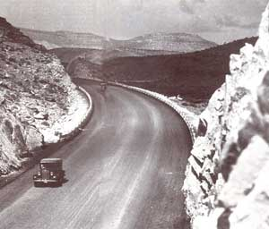
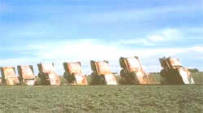
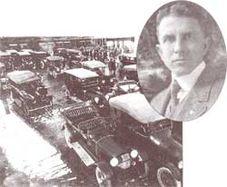
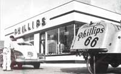
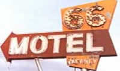
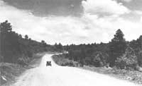

The Mother Road
Travel along historic Route 66 and its myths and history.
By the Mother Earth News editors
May/June 1990
I t conjures up all kinds of images. ROUTE 66. An artery linking much of the nation. ROUTE 66. An inspiration to literature, music, drama, aft and a nation of dreamers. ROUTE 66. A highway fashioned from vision and ingenuity. ROUTE 66. A broken chain of concrete and asphalt. ROUTE 66. It has forever meant "going somewhere.".
U.S. Route 66, starting at Grant Park in Chicago, reached across more than 2,400 miles, three time zones and eight states before it dead-ended at Santa Monica Boulevard and Ocean Avenue in Santa Monica. People like to say the highway started at Lake Michigan and ended in the roaring Pacific. It was one of the country's first continuous spans of paved highway linking east and west.
One of the most famous highways in the world, it now exists only in memory. Parts of it were known as the Pontiac Trail, Osage Indian Trail, Wire Road, Postal Highway, Ozark Trail, Grand Canyon Route, National Old Trails Highway, Mormon Trail and the Will Rogers Highway. Steinbeck called it "the mother road, the road of flight." Some, like the Okies, knew it as the "glory road." Because it went through the center of so many towns, it became known as the "Main Street of America." The highway has been a mirror held up to the nation. It put Americans in touch with each other through its necklace of neon, Burma Shave signs, curio shops, motor courts, garages, diners and cafes with bigboned waitresses who served up burgers, blue plate specials and homemade pie.
Route 66 means a time before America became generic-when motels didn't take reservations, when there were genuine barbershops and drugstores, when doctors made house calls. Movie theaters weren't look-alike boxes in a shopping center. There were no diet soft drinks or imported waters. People drank straight from the tap and sipped iced tea brewed by the sun, or guzzled bottles of cold beer or Coca-Cola or grape Nehi. Hitchhiking was safe. Nobody worried about cholesterol. Summers seemed to last longer: There were drive-in movies and miniature golf courses and slow-pitch softball games under the lights.
Route 66 was also a highway of flat tires, overheated radiators and cars with no air-conditioning; tourist traps with few amenities; treacherous curves, narrow lanes, speed traps and detour signs.
The highway that spanned two-thirds of the nation was christened in 1926, when we were between wars and on the wagon. It was the America of Edgar Lee Masters, Sinclair Lewis and Thornton Wilder. Calvin Coolidge was president. People across the country, especially in the Bible Belt, were still mulling over the Scopes trial of the previous year. Aimee Semple McPherson, Admiral Richard Byrd, Gertrude Ederle and the U.S. invasion of Nicaragua were also making headlines.
It was a vintage year for Ferber, Fitzgerald, Hemingway and O'Neill. Robert Goddard launched the first liquid-fueled rocket, and the St. Louis Cardinals became world champions of baseball on an October afternoon when a right-hander named Grover Cleveland Alexander strolled out of the bullpen in Yankee Stadium and struck out Tony Lazzeri with the bases loaded.
Early highway boosters gathered in Tulsa in 1924. Top right, is a 1927 shot of Cyrus Stevens Avery, "Father of Route 66"
It was also in 1926 that Henry Ford changed the life of the nation by lowering the price of motorcars. The growth of the automobile industry and die addition of more drivers put added pressure on state and federal authorities to come up with better roads. (Politicians were made acutely aware that drivers were also voters.) At long last, the stage was set to build a transcontinental American highway, steeped in the history of the land it crossed. It had been a long time coming.
Americans had pressed for good roads back in the 18oos, but their interest faded for a while when railroads came along and gave people a rapid and inexpensive way to travel across the country. Following the Civil War, there was a renewed push for road improvements. That effort continued to grow in the 20th century once inventive geniuses such as Ford appeared on the scene and the motorcar made its debut. The government passed the Federal Aid Road Act of 1916, which made funds for new highways available to the states. By the end of World War I, the "good-roads" movement in America was gaining momentum. Still, as of 1920, most of the nearly 3 million miles of highways in America were only fit for travel by horse and buggy.
By the 1920s the auto began to stir the popular imagination. The motorcar was changing the nation, its courtship habits, its family life. The auto allowed workers to live outside the cities and commute to jobs. It ended the isolation of the farmer's life. Most of all, it provided an escape. That meant roads had to be in better shape. To this end, Congress passed the Federal Highway Act in 1921; the new law called for the construction of a system of interconnected interstate highways.
To help avoid confusion, the nation's highway commissioners decided to assign numbers instead of names to existing roads, with even numerals for highways running east and west, and odd numbers for those running north and south. The routes that crossed state lines would be given shield-shaped signs signifying U.S. highways, or circular signs identifying them as state roads. It was also decided that main highways would be numbered under 100, with the more important roads designated with zero numbers, such as 40, 50 or 60.
Initially, officials from Missouri and Illinois decided that the Chicago-Los Angeles passage should be called Route 60. Officials from Kentucky and Virginia vehemently objected. They were supporting a proposed highway linking Newport News, Virginia, with Springfield, Missouri, and wanted that highway to carry the number 60. Both sides dug in and refused to yield.
Tourists could stop to buy chunks of pertified wood or Ozark curios and sip cups of sweet cider.
AFTER months of firing salvos back and forth, both sides grew fearful of congressional intervention, which they believed could wind up scuttling the entire national highway plan. Finally, Oklahoma, Illinois and Missouri officials resigned themselves to picking another number for their highway. They looked at the possible candidates left and found that the number 66 was available. It was accepted. Route 66 became a reality at last.
The highway would wind out of mighty Chicago and traverse the gently rolling Illinois farmland, where the sod was the color of licorice. In Missouri the road would closely track the old Osage Indian Trail and the Wire Road, and cut across the state in a southwesterly direction. The highway would briefly caress the Kansas prairie before marching across the oil fields and ranchlands of Oklahoma. It would continue through the Texas panhandle, climb the steep plateaus and mountains of New Mexico and Arizona and cross the desert of southern California on its way to the Pacific coast.
When the highway became official in 1926, about 800 miles of the route were already paved. The surface of the remaining 1,648 miles was either graded dirt or gravel, bricks covered with asphalt or, in a few stretches, nothing but wooden planks. It would take until 1937 to pave-in most places with concrete or macadam, a surface of broken stonethe entire length.
Less than three years after the highway was officially opened, the Roaring '20S lost their roar. The economy began to crack, the stock market hit bottom and the nation plunged headlong into the years of the Depression. When unprecedented droughts besieged farmers in the Midwest and Southwest, starting in the brutal summer Of 1930 and lasting for the next several years, U.S. 66 became the proverbial dust bowl highwaya road of flight.
For the poor dirt farmers, whose lives and fields had literally been blown away, there was no time for fun and games on the road. For them, the highway was a migrant's path, which they believed would lead into the fertile promise of southern California. Their plight was immortalized 'in Steinbeck's The Grapes of Wrath, the Pulitzer prize-winning novel Of 1939, which told the story of the Joad family and its escape down Route 66 to the promised land.
"Route 66 became more than simply a U.S. federal highway number," says geographer Arthur Krim. "It was the symbolic river of the American West in the auto age of the 20th century. Along its course flowed the American migration from the Midwest to California. In the process, it became an icon of free-spirited independence linking the United States across the mountain divide to the Pacific Ocean.
THE grim years of the Depression and the dust bowl seemed to last forever. On April 14, 1935, a huge black dust storm blew out of western Kansas, crossed Oklahoma and moved over the Texas panhandle. It looked to eyewitnesses like the end of the world. At the time, balladeer Woody Guthrie was living in Pampa, Texas. He spied the ugly clouds descending on the land, went inside his house and scribbled down the words for a new song.
So long it's been good to know Yuh,
So long it's been good to know Yuh,
So long, it's been good to know Yuh,
This dusty old dust is a-getting my home.
And I've got to be drifting along.
Guthrie's song became an anthem for the down and Out, the disenfranchised who traveled west on Route 66 following the sweet scent of orange blossoms to California.
Eventually, the rains did return to the Great Plains in the late 1930s. The wind quit blowing and the dust became fertile earth. Then came the century's second war-World War IIand wheat farmers all along Route 66 who had suffered became prosperous once more. Business along Route 66 survived wartime gas rationing and the tire shortages. The highway became an army convoy road. Many stretches were filled with Jeeps and trucks transporting troops and arms to various military bases and forts that dotted the length of the highway. Bus and train stations in the big cities along the route were crowded with servicemen shuttling between duty posts.
Shortly after the war, the road became crowded with shiny vehicles filled with ex-Gls and families on the move. As more automobiles were produced, the traffic count soared. Route 66 became one great big traffic jam. Westward migration surpassed the great numbers of the dust bowl era when the highway had been clogged with migrants.
In 1946, Jack D. Rittenhouse published A Guide Book to Highway 66, a book that became a bible for road travelers. For only a buck, travelers could follow Route 66 town by town "over two thousand miles of fascinating highway." Besides listing the best motor courts, cafes and tourist attractions, Rittenhouse also offered plenty of sage advice and road tips.
As the growing number of vacationers gassed up their new postwar sedans and took to the road, they also heard for the first time "Get Your Kicks on Route 66," Bobby Troup's bluesy pop hit Of 1946, which joined Guthrie's ballads and the folk songs of Pete Seeger as an ode to the highway. Originally recorded by Nat "King" Cole, the simple tune went on to be immortalized by the Andrews Sisters, Bing Crosby, Chuck Berry, the Rolling Stones, Asleep at the Wheel, Manhattan Transfer, Mel Torme, Depeche Mode, Michael Martin Murphy and a host of others. Nothing seems to have captured America's love affair with the road more than this song.
If you ever plan to motor west;
Travel my way, take the highway
that's best.
Get your kicks on Route Sixty-six!
It winds from Chicago to L.A.,
More than two thousand miles all
the way.
Get your kicks on Route Sixty-six!
Now you go thru Saint Looey
and Joplin, Missouri
And Oklahoma City is mighty pretty.
You'll see Amarillo; Gallup,
New Mexico;
Flagstaff, Arizona; don't forget Winona,
Kingman, Barstow, San Bernardino.
Won't you get hip to this timely tip:
When you make that California trip
Get your kicks on Route Sixty-six!
Get your kicks on Route Sixty-six!
IN the 1950s, Route 66 was a genuine celebrity. Families could leave their homes in the East and Midwest and actually drive out to the Grand Canyon or Painted Desert. They could go all the way to the Pacific on a highway that passed through towns where Abe Lincoln practiced law, Jesse James robbed banks, and Will Rogers learned how to twirl a rope.
They could cross Mark Twain's great river into lands where outlaws hid in dark caves, and drive through picture-book countrysides where cowpokes still chased dogies into the sunset.
But it was in the 1950s that the bright lights of fame and fortune that had shone on the highway for so many years were also beginning to dim. In 1954, President Dwight Eisenhower established a President's Advisory Committee on a National Highway Program. That move signaled the decline of the fabled highway. Ike apparently had been smitten by the efficient German autobahn during his tenure as supreme commander of the Allied Forces during World War II.
The coming of the interstates was slow and laborious. Construction cost billions of dollars, yet the federal government persisted. A piece of Route 66 was replaced here and there, bypasses were constructed around various towns and cities, and little by little the old highway was turned into a service road for its replacement.
Beat writer Jack Kerouac's novel On the Road was published to enormous acclaim in 1955. The book spoke of "a fast car, a coast to reach, and a woman at the end of the road," but, despite its appeal, it failed to halt the demise of the old highway.Route 66,the popular CBS television series of the early 1960s, starring George Maharis and Martin Milner as a pair of highway adventurers in a screaming Corvette, couldn't stop the interstates from coming, either.
Originally, the national interstate plan was supposed to take about 12 years to complete. It ended up taking more than twice that long. Finally, the last stretch of U.S. Highway 66 was bypassed *in 1985, near Williams, Arizona, when a final strip of Route 66 was replaced by a section of Interstate 40. As one of the old highway's aficionados put in 1925 in Arizona, traffic was light. it, the opening of the interstates made it possible to drive all the way from Chicago to the Pacific without having to stop. The government called that progress.
Thank God, not everyone agreed.
There are still people from every walk of life who realize that the spirit of the Mother Road cannot be killed. They are people who recognize that Route 66 is reborn every time someone reads The Grapes of Wrath, or sees the film, catches a rerun of the '60s television series or listens to the music of the road. It's resurrected whenever someone pulls off the interstate and drives a stretch of the honest highway that remains.
An award-winning reporter, Michael Wallis's work has appeared in more than too magazines and newspapers, both here and abroad. He is also the author of Oil Man, The Story of Frank Phillips and the Birth of Phillips Petroleum (Doubleday, 1988). He lives in Tulsa, not too far from Route 66.
COPYRIGHT © 1990 BY Michael Wallis from the book Rout 66:The Mother Road. Reprinted through special arrangement with St. Martin's Press, Inc. New York.
|
Road sights: old Cadillacs in Texas, empty motels farther west. |
 BOOSTERSS AND AVERY: ? CYRUS STEVENS AVERY COLLECTION/COURTESY RUTH SIGLER AVERY |
 Those were boom times in Tulsa 1947 |
 Santa Monica was the end of the road, but all along it the same two digits always beckoned |
 In the 1925 in Arizona, traffic was light. |
 |
|
 |
 |
|